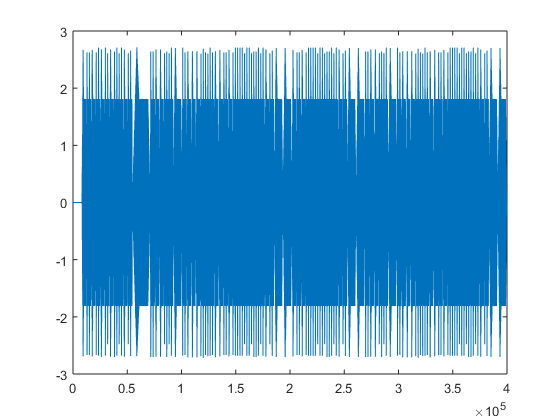

[nota,b,c]=textread('Notalar.txt','%s %s %s'); %Notalar.txt dosyasi okunarak sutunlar bir degere atandi fs=8192;%ornekleme degiskene atandi ds=round(fs/100); %durma suresi go=round(fs/10); %gecikme suresi notalar=zeros(1,fs); %ornekleme suresi kadar 0 dan olusan bir dizi olusturuldu a=zeros(1,length(notalar)); %notalar matrisi boyutlarinda 0 dan olusan bir dizi olusturuldu durak=zeros(1,ds); %durma suresi boyutunda 0 dan olusan bir dizi olusturuldu oktav=str2num(cell2mat(b)); %dosyadan cell olarak okunan degiskenler double degere donderildi
for i=1:(length(nota)) %nota dizisi boyu kadar dongu olusturuldu vurus((i),1)=str2num(cell2mat(c(i,1))); %dosyadan cell olarak okunan degiskenler double degere donusturuldu frekans((i),1)=frek(nota((i),1),oktav((i),1)); %daha onceden olusturulmus frek fonsiyonu donusturuldu [x,t]=note(frekans((i),1),vurus((i),1)); %daha onceden olusturulmus note fonksiyonu donusturuldu notalar=[notalar durak x]; %note fonsiyonunun dondurdurulen sinyal degeri aralarina daha once olusturulmus durak dizisi de yerle�tirilerek birle�tirildi end %for dongusu plot(notalar)
notalarecho=zeros(1,(length(notalar))); %notalar matrisi boyutlarinda 0 dan olusan bir dizi olusturuldu for i=1:(length(notalar)) %notalar dizisi boyu kadar dongu olusturuldu f=(go+i); %echo olusturmak icin gerekli olan gecikme suresi donguye sokuldu if f<(length(notalar)) %gecikme suresi notalar matrisinin boyutunu gecmesin diye sartlandi notalarecho(i)=notalar(i)*0.3+notalar(f); %notalar matrisinin herbir degerinin %30'u alinip gecikme suresi kadar kayd�r�lm��t�r else notalarecho(i)=notalar(i)*0.3+0; end end plot(notalarecho)
normalizenotalarecho=zeros(1,(length(notalar)));%normalizasyon islemi yapilmasi icin degisken tanimi normalizenotalarecho=notalarecho/max(abs(notalarecho));%sinyalin tepe degerleri 1'e normalize ediliyor plot(normalizenotalarecho) sound(normalizenotalarecho) %sinyal caldiriliyor.
Warning: Unable to play audio because no audio outputs were found. Warning: Unable to play audio because no audio outputs were found.